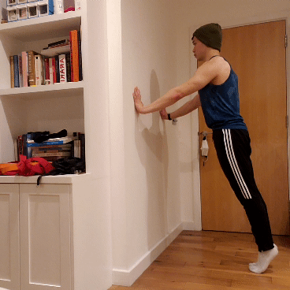

Upper Body: Pushup
Muscles Worked: Chest (Pectorals), Shoulders (Deltoids), Arms (Triceps)
1 - Incline Wall Pushup

As you become more upright, pushups become easier. Compared to a floor pushup, incline wall pushups lessen the range of motion and the effects of gravity: making the exercise easier.
Tips:
- As you get better, move your feet further away from the wall. This shifts more of your weight onto the wall, creating more resistance.
- Get on your tiptoes to create a greater incline. This also means you don't have to move your hands too far down the wall.
- Make sure your elbows don't flare out to avoid injuring yourself.
2 - Knee Pushup

Also called a box pushup, this is a great way to work towards a full pushup. It shortens the distance from where you push and the pivot between your body and the ground. As a result, you need to exert less force than a traditional pushup.
Tips:
- It may be a bit awkward at first to find a comfortable position for your arms. Keep trying!
- Keep your core tight throughout the movement.
- If possible, rest your knees on a soft surface like a yoga mat.
- Make sure your elbows don't flare out to avoid injuring yourself.
3 - Full Pushup
This is your standard-issue, run-of-the-mill, vanilla-flavoured push up. Nothing more to it. However, it's important to maintain perfect form with each rep. Quality over quantity!
Tips:
- With a wider grip, your chest will have to do more work. With a narrower grip, your triceps will have to do more work. Aim for the midway point (i.e., around 45 degrees from the shoulders) to work them equally.
- To keep yourself accountable, touch the ground with your chest/nose to count as one repetition.
- Avoid hyperextending (locking out) your arms at the top - they should be slightly flexed.
- Make sure your elbows don't flare out to avoid injuring yourself.
4 - Inverse Pushup
Normal pushups are boring. How about spicing it up by having your fingers face backwards? Since your hands are closer to your midsection, you'll need greater core stability than a traditional pushup.
Tips:
- These work the same muscles as a normal pushup but requires very different technique. Keep experimenting!
- Ensure that your shoulders and wrists are properly stretched before doing this exercise.
- Be extra careful if you've never done these before. Never rotate your hands more than what feels natural.
5 - Plyometric Pushup
If you've ever seen people doing clap pushups, these are the first step to getting there. If you're strong enough to push your body into the air, the sky is (literally) the limit!
Tips:
- Remember, this an explosive movement. If you're tired, doing these is probably not a good idea.
- You have to expend a lot of power to cushion your fall. Keep that in mind!
- Do not attempt these if you're unsure - landing repeatedly on your wrists can be extremely dangerous.
Click HERE to return to the home page.